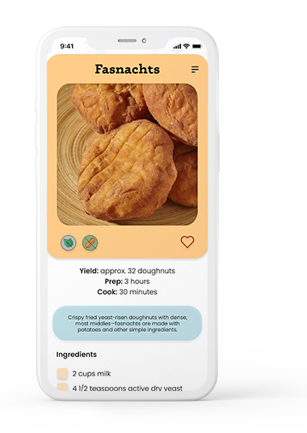

Recipes for Everyone
Whether you're here to find an old recipe you've been craving or to try something new, the highly visual recipe screens will have you wanting to try everything! We're confident that Eat Hearty will soon be your favorite recipe resource. We're always adding new recipes for you to try! Ours chefs love to test submissions from our users and we are constantly sourcing authentic dishes to add to our repertoire. You can trust that each and every recipe has been taste tested a time or two, or maybe even three when it came to the sweets!
Featured Recipe Preview
Fastnachts
Crispy fried yeast-risen doughnuts with dense, most middles—fasnachts are made with potatoes and other simple ingredients. They are served on Shrove Tuesday or Fasnacht Day, the day before Ash Wednesday. The term fasnacht is a combination of the verb fasten (to fast) and nacht (night). Fasnachts were traditionally prepared in an effort to empty the pantry of items such as sugar, lard, and butter before Lent.
Typically tossed in granulated or powdered sugar, nowadays you can find fasnachts with icing and fruit fillings similar to doughnuts. Traditionally, however, they were left plain. Often square in shape, meant to represent the four gospels of the Bible, round and triangular versions also exist.
Wonderful Good Cookery
FFood is abundant and appetites are hearty in the Pennsylvania Dutch country. The traditional dishes are relatively simple and unlike most regional cookery the ingredients are readily available. PA Dutch cooking is truly a folk art requiring much intuitive knowledge, for recipes contained measurements such as “flour to stiffen,” “butter the size of a walnut,” and “large as an apple.” Many of the recipes have been made more exact and standardized providing us with a regional cookery we can all enjoy. Best of all, no matter who makes the recipes, the results are wonderful good!
This app was designed to bring traditional Pennsylvania Dutch cookery to people everywhere. Features include a visual menu that is organized by categories and can be filtered by dietary restrictions, level of difficulty, or time required. You can search by recipe names or ingredients, as well as keep a shopping list for items you're missing. Featured recipes include information about seasonally relevant cookery and you can save your favorites to easily access later.